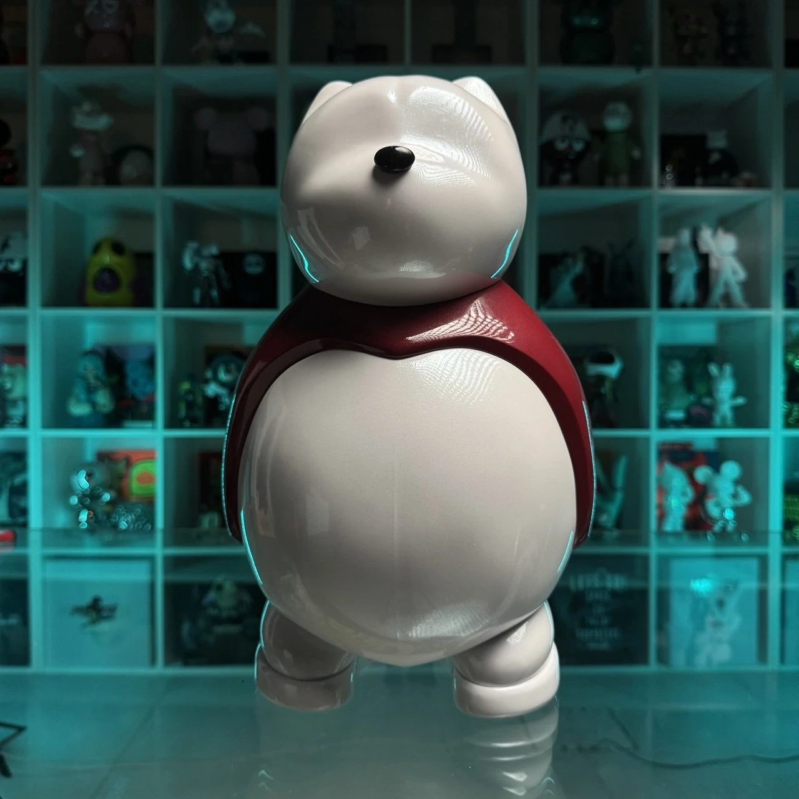
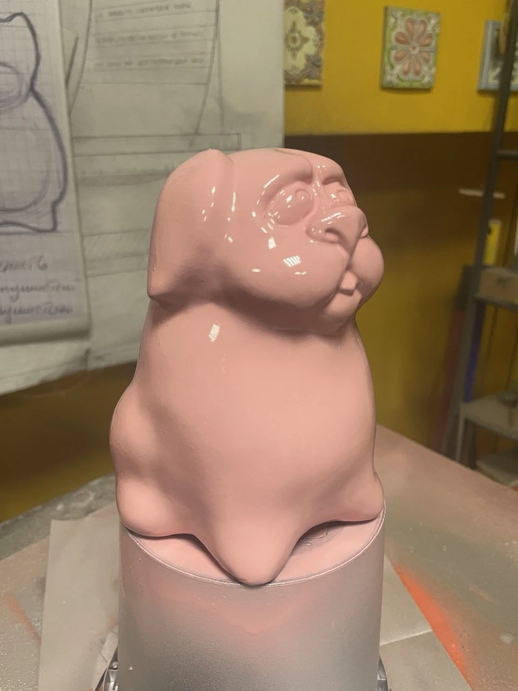
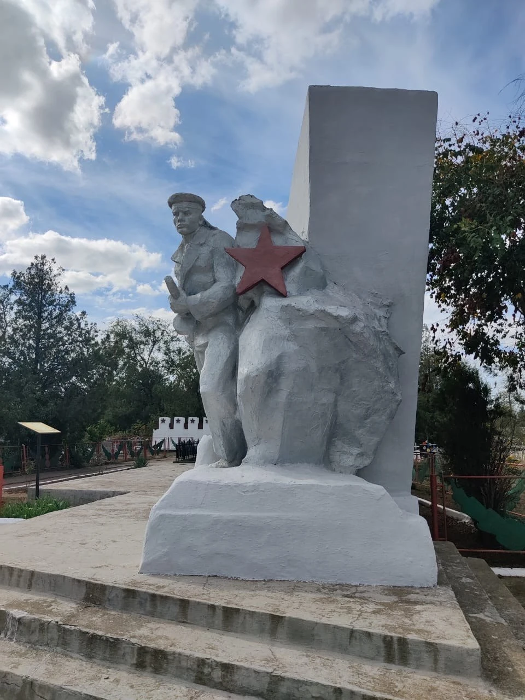
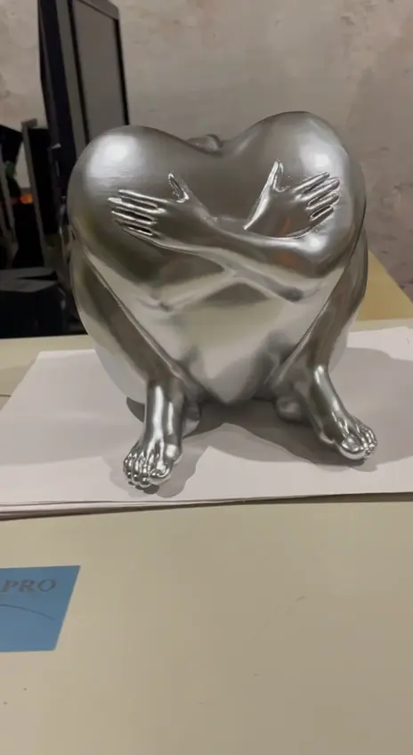

01 / Сувениры, призы, награды
Награды для премии СТД России Готовая серия скульптурных наград в мастерской. Скульптурные награды для Премии Председателя и Сопредседателя СТД РФ.
Изготовление. Цифровой дизайн и 3D-печать готовой серии скульптурных наград. Проект реализован командой Технопарка РГСУ.
Вручение. 18 декабря 2025 года, Театральный центр «На Страстном». Владимир Машков вручил премии в области драматического театра.
Проект реализован командой Технопарка РГСУ.
Полный кейс: все фото, видео и подписи — новая вкладка
02 / Скульптура
Медведь. С характером. 
Белый медведь с красным акцентом. Вид спереди. От первого рисунка до готовой скульптуры. Простой силуэт, узнаваемый нос и мягкая пластика превращают медведя в самостоятельный характер. В галерее — эскиз, исходная форма и несколько цветовых исполнений.
ТРИФОТИ / Фирменный персонаж
Персональные роли участников в этом кейсе не уточнены.
Полный кейс: все фото, видео и подписи — новая вкладка
03 / Скульптура
Розовый персонаж 
Розовый персонаж. Основной ракурс. Характер читается в пластике мордочки и мягком силуэте. Глянцевое розовое покрытие подчёркивает объём и делает скульптуру цельным акцентным предметом.
Авторский персонаж / Скульптура
Персональные роли участников в этом кейсе не уточнены.
Полный кейс: все фото, видео и подписи — новая вкладка
04 / Скульптура
Восстановление утраченного 
Скульптурная композиция на месте. Общий ракурс. Работа с утраченной формой начинается с внимания к сохранившемуся объекту. В этом кейсе — мемориальная скульптурная композиция и её пластическая проработка в модели: силуэт, позы фигур и характер деталей. Фотографии на месте и ракурсы модели показывают разные стороны этой работы.
Мемориальная пластика / Возвращение целостности
Персональные роли участников в этом кейсе не уточнены.
Полный кейс: все фото, видео и подписи — новая вкладка
05 / Скульптура
Пластика жеста 
Постер видео. Круговой обзор скульптуры из мастерской. Серебристая скульптурная композиция с переплетёнными руками. В движении хорошо видны её объём, линии и фактура поверхности.
Скульптурная композиция / Арт-объект
Персональные роли участников в этом кейсе не уточнены.
Полный кейс: все фото, видео и подписи — новая вкладка · Исходное видео — новая вкладка
06 / Сувениры, призы, награды
Переходящий кубок Спартакиады РТО Переходящий кубок Спартакиады РТО. Готовое изделие с табличкой первого победителя, 2026 год. Переходящий кубок Спартакиады Российского театрального общества.
Изготовление. Step3D разработал и изготовил награду: 3D-моделирование, печать, сборка и декоративная отделка.
Первый обладатель. Театр «Ленком Марка Захарова», победитель общекомандного зачёта Спартакиады РТО 2026 года.
Разработка и производство — Step3D. Из портфолио STEP_3D.
Полный кейс: все фото, видео и подписи — новая вкладка